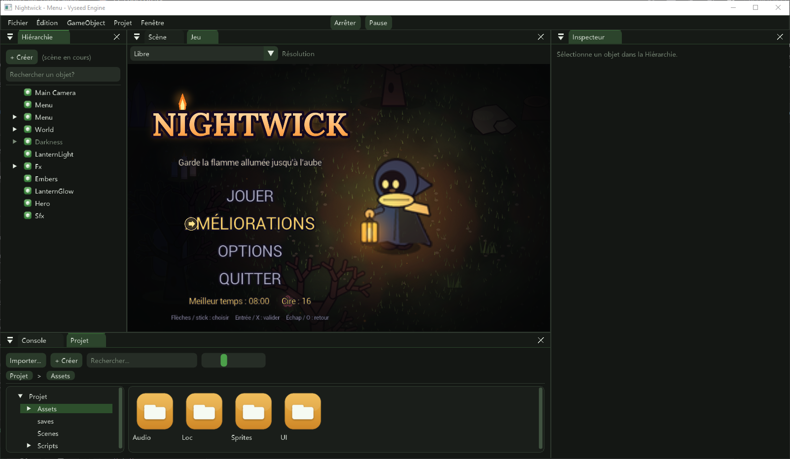

Création d'un moteur de jeu 2D
J'ai codé a la main un moteur de jeu 2D qui inclu toutes ces features : Architecture : C# .NET 10, ~25 000 lignes. Noyau sans graphique (Core), rendu Raylib (Runtime), éditeur ImGui, Hub, lanceur de jeu (Player), scripts Roslyn. Objets : GameObject + composants (~100), prefabs, scènes JSON lisibles, annuler/rétablir, copier-coller. Éditeur : Hiérarchie (recherche, « Aller à »), Inspecteur, vues Scène et Jeu, gizmos, aimantation, multi-sélection, Console cliquable, import par glisser-déposer, renommage qui met à jour les références. Scripts C# : rechargement à chaud, erreurs avec fichier et ligne, Visual Studio en instance unique. API simple : Vyseed.Delay/Spawn/Save/Load/LoadScene/Find…, événements, hasard, succès, pooling, checkpoints, tweens. Entrées : clavier, souris, manette, tactile virtuel, actions reconfigurables. Physique 2D : corps, colliders (boîte, cercle, capsule, polygone, sprite), joints, ressorts, triggers, requêtes sans collider, plateformes, sous-pas anti-traversée. Rendu 2D : sprites, formes, tuiles (Tilemap2D), traînées, lignes, particules (8 presets), parallaxe, texte monde, contours et lueurs. Lumières modernes : point, cône, faisceau, soleil ; ombres douces qui suivent la forme exacte des sprites, sans ombre sur soi, HDR 16 bits. Matières : métal, brillant, relief automatique, reflets qui bougent avec la lumière (Surface). Ambiances (Volume) : 11 presets, halo (bloom), tone mapping, couleurs, vignette, aberration, grain. Reflets : ReflectiveSurface2D (sols mouillés, eau, miroir). Niveaux de rendu : Faible / Moyen / Élevé / Auto qui monte et redescend seul ; F3/F4 intégrés. Animation : squelette 2D avec clips et enregistrement, feuilles de sprites, effets de ressenti (squash, secousse, hit-stop). Caméra : suivi, anticipation, secousse, plusieurs caméras en fondu, salles, limites. Interface en jeu (~40 éléments) : boutons, curseurs, champs, listes, dialogues, mini-carte, boussole, navigation manette ; marche aussi dans un Canvas monde. Sélecteur de fichier/dossier du moteur (identique dans le jeu exporté). Audio : sons, musiques avec fondu, volumes sauvegardés, bruit comme donnée de jeu (signal 1 à 7). Gameplay prêt : vie, tir, projectiles, vagues, ramassage, checkpoints, téléporteurs, patrouilles, ligne de vue. Localisation : FR/EN + autres langues par fichier, éditeur de traductions. Sauvegarde : JSON atomique, option de chiffrement. Export léger : un lanceur sans éditeur + un fichier de données (chiffrable), scripts compilés, option un seul .exe, ne garder que les fichiers utilisés, .zip. Écran de démarrage : le tien (image, son, durée) puis « Made with Vyseed Engine » avec le vrai logo ; curseur personnalisé. Outils : RenderLab (photographie le vrai rendu en PNG), documentation docs/API.md, ~960 tests automatiques. Il manque (priorité haute) : contrôleurs de plateforme/vue de dessus, éditeur de tuiles, machine à états d’animation, pathfinding, normal maps, matières émissives, brouillard et rayons de lumière, export Linux/Mac/Web, réseau.